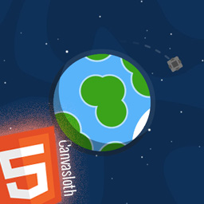

Artificial Orbit Simulation

This page is a small <canvas> experiment who simulates the gravity around the Earth.
You can control a tiny ship
with the arrow keys of your keyboard
.
So, it's easy to understand how the placement into orbit around a planet works.
I wanted to code this page after seeing the video :
e-penser (Ep.03).
Inside is explained several things like the reason why there is no need of energy to maintaining an object into its orbit. Or understand there is no place without gravity especially just near the atmosphere, etc.
And for the fun, you can choose which object of the scene becomes the referencial for the camera by clicking the buttons at the bottom :
- The ship
- The Earth
- Or the Universe (in this mode the background will doesn't move)
Enjoy :D
Sorry but it's seem to be slow on Firefox :(